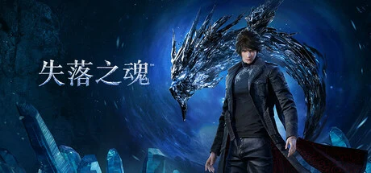

上海零犀 UltiZero 开发、索尼发行的科幻奇幻 ARPG，制作人杨冰 2014 年单人起步、索尼中国之星扶持。主角卡泽尔与龙形生物阿瑞纳共生，高速华丽连段、多异次元世界。
想象你正站在皇帝生辰庆典的人群里，反抗军的信号就要发出——下一秒，天上砸下一场流星雨，你妹妹路易莎的灵魂在你眼前被生生抽走。这不是天灾。抬头你就明白，那是来自星穹之外维度的入侵者「空罗」，它要的从来不是土地，是灵魂。这片大陆一半是握剑的古代遗迹、雪国枫林，另一半是靠掠夺星外能量撑起的强权帝国——最终幻想式的科幻与奇幻，在同一个画面里对撞。
你叫卡泽尔，为了把妹妹的灵魂追回来，你唤醒了被封在地下实验室多年的龙形生物阿瑞纳。你们成了共生体——它的力量流进你的剑里，你替它去面对那些被空罗扭曲的战士与怪兽。你穿过一个又一个异次元世界，一边削弱腐朽帝制，一边逼近夺走妹妹的真相。四把武器在手里无缝切换，剑光快得像闪电，身法虚得像残影——「击如惊雷，避如鬼魅」是你战斗的全部信条。
可有些代价，快剑砍不掉：替你并肩作战的龙，它的力量和你的命早已绑在一起，救妹妹的路上你会不会先失去它？你追了整段旅程的那场流星雨，掀开真相时未必是你想要的答案；而那个「先救世界还是先救妹妹」的选择，可能根本没有两全。这不是一个关于打得多华丽的故事，是一个关于「一个人到底能为亲人走多远」的故事——当阿瑞纳的力量在你血里翻涌，你还认得出哪一部分是卡泽尔，哪一部分是龙吗？
「华丽剑舞 × 星外奇幻」，是把东方奇幻的枫林雪景和最终幻想式的科幻混搭缝进同一段旅程的美学。底子是写实向的角色建模加韩系服装设计——卡泽尔常被说像 Noctis 加 Cloud 的合体；变异在于星外入侵者「空罗」的领域，充满外太空科技感的神族式建筑。色彩上以冷冽的雪国青白撞龙之力的暗金橙双色为骨。整体调性介于爽快凌厉的动作演出与参差不齐的场景完成度之间。
「华丽快节奏 ACT + 奇幻叙事」这套美学有清晰的来路。2000 年代《鬼泣》《忍者龙剑传》定义了「Stylish Action」的连段美学与镜头语言。2009 年《猎天使魔女》把「魔女时间」式的精准闪避推向顶点，成为后来无数动作游戏的标配。到了 2010 年代中后期，《最终幻想15》《最终幻想7重生》把科幻与奇幻混搭、把公路旅行式叙事塞进 ARPG。失落之魂走的正是这条线——制作人杨冰 2014 年单人起步、靠索尼中国之星扶持成军，用十年时间把「一个人一条龙的华丽剑舞」做成了一款国产 ACT。它的短板也很典型：动作演出对标世界一流，叙事与场景打磨却还差一口气。
基于体验清单 · 审美偏好 · IP故事三维度综合选出
点击链接跳转到对应平台查看 · 仅整理外部链接